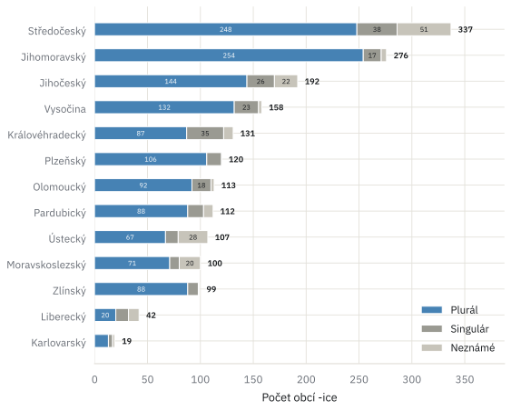
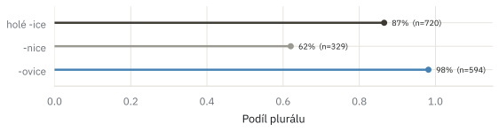
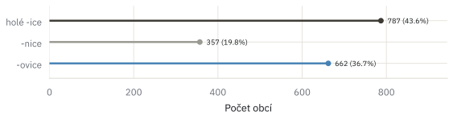
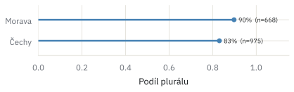
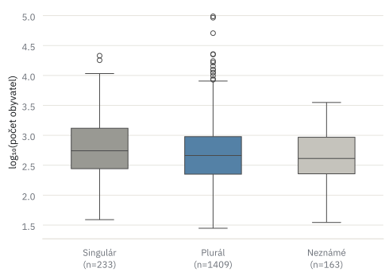
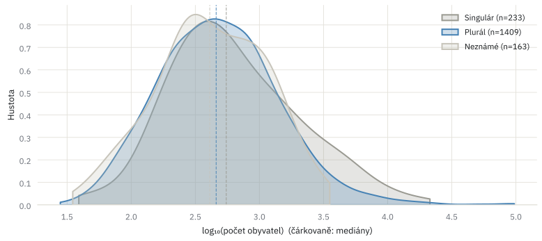
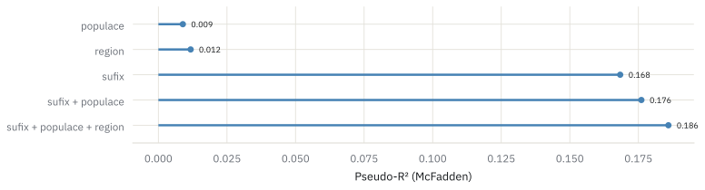
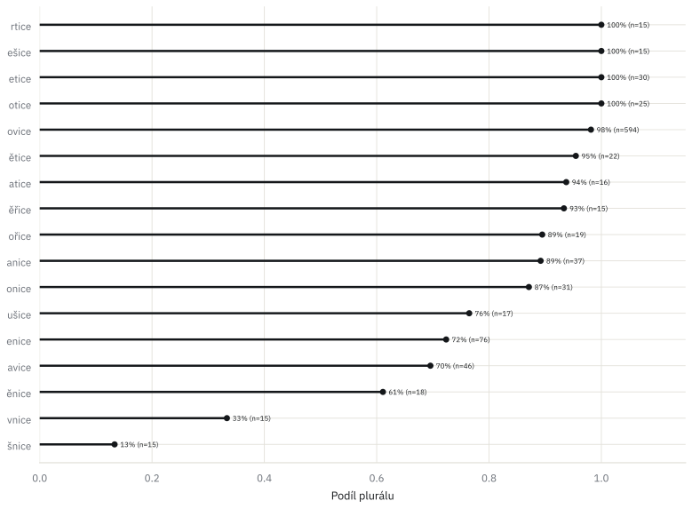

Projekt
Ty Pardubice, nebo ta Kopřivnice?
Gramatické číslo a geografie jednoho z nejběžnějších místopisných sufixů
vytvořeno 1. 7. 2026 · aktualizováno 25. 8. 2026
"Mohelnice jsou...", "Ne! Co to říkáš? Mohelnice je!" Až do počátků své dospělosti jsem žil v iluzi, že západomoravské město Mohelnice je množného čísla (do dnes se mi tomu nechce moc věřit a to přes ní jezdím nezanedbatelně často). Proč by měla být množného, když Pardubice, … Sušice, počkat! Sušice na klatovsku je v singuláru, ale část obce Moravská Třebová je množného. Ale obě Lukavice, které znám (orlickoústecko a šumpersko), jsou v jednotném čísle. A pak třeba Kopřivnice, …
Kdo se v tom má vyznat. To abychom při každé snaze přečtení názvu obec při cestování skrz republiku, nahlíželi nejen do map ale i do slovníku. Podle jakého pravidla se to* řídí?
Správné gramatické uchopení toponym (vlastní jméno neživého přírodního objektu) je, zdá se mi, častým rétorickým problém. Na Vsetíně či ve Vsetíně? Na Kladně, v kladně? V Nymburce nebo v Nymburku a v Šumperce nebo v Šumperku? Ve Svitavech, ve Svitavách? Ta Olomouc, ten Holomóc nebo třeba ten Ohře. Výčet problémových zeměpisných pojmenování zdaleka není u konce. Zaměřme se dnes ale čistě na můj dětský mohelnický problém.
V České republice je 1806 obcí, jejichž jméno končí na "-ice". U některých je gramatické číslo jasné každému, kdo tam vyrostl. U jiných to neví nikdo, kdo tam nebydlí (a často ani oni sami, viz … ) — a ukázalo se, že to čas od času neví ani autoři Wikipedia. Zajímalo mě, jeslti se dá, co mluvčí češtiny "prostě vědí", systematicky popsat? A pokud ano — čím se to řídí? Historií osídlení? Velikostí obce? Tím, kde v zemi leží? Nebo je to nakonec jen o tom, jak je jméno utvořené?
1 806 obcí na -ice · 1 410 plurál · 233 singulár · 163 neznámé
Zdroj gramatického čísla: Wikipedia. Demografie a administrativní členění: ČSÚ / RÚIAN. IJP ÚJČ jako nezávislý zdroj zatím chybí — viz sekce limitace.
obce na -ice v číslech
| kategorie | počet obcí | podíl |
|---|---|---|
| Celkem obcí na -ice | 1 806 | 100,0 % |
| Klasifikováno (singulár + plurál) | 1 643 | 91,0 % |
| — plurál | 1 410 | 78,1 % |
| — singulár | 233 | 12,9 % |
| Nerozpoznáno (unknown) | 163 | 9,0 % |
součet populace 1 923 253 · průměr 1 065 · medián 463 obyvatel

Počet obcí na -ice podle kraje. Středočeský kraj (337) a Jihomoravský kraj (276) vedou jednoznačně — částečně proto, že jsou plošně největší, ne nutně proto, že by tam byl sufix -ice frekventovanější poměrově.
je to slovotvorba, ne náhoda
Nejsilnější vysvětlení není geografické ani demografické — je to prostě to, jak je jméno utvořené. Skoro čtyři z deseti obcí na -ice (662, tedy 37 %) končí na -ovice: Kunovice, Nemojovice, Novákovice a stovky podobných. -ovice je patronymický formant — zjednodušeně "ves lidí Novákových" — a tenhle vzor je téměř kategorický: 98,1 % obcí na -ovice je v plurálu. Naproti tomu -nice (357 obcí) je nejvíc singulárová skupina ze všech — jen 62 % plurálu. Zbytek, "holé -ice" bez rozpoznatelného formantu (787 obcí, různorodá zbytková kategorie), je někde uprostřed s 86,5 %.
Ten rozdíl mezi skupinami není drobný stylistický detail — je to zdaleka nejsilnější prediktor, jaký jsme v datech našli. Sufix samotný vysvětlí zhruba 19× víc variance gramatického čísla než populace obce a 14× víc než to, ve kterém regionu obec leží (podrobněji v sekci Syntéza níže).

Podíl plurálu podle sufixální skupiny (jen klasifikované obce, zdroj Wikipedia): -ovice 98,1 % (583/594), holé -ice 86,5 % (623/720), -nice 62,0 % (204/329) — nejvíc singulárová skupina ze všech tří.

Velikost sufixálních skupin: -ovice 662 obcí (37 % všech -ice obcí), holé -ice 787 obcí (44 %), -nice 357 obcí (20 %). Skupiny nejsou stejně velké — graf výše srovnává procenta, ne absolutní počty.
Statistický test: sufix vs. gramatické číslo
Chí-kvadrát (χ²) test nezávislosti porovnává, kolik obcí je singulár/plurál v každé sufixální skupině, s tím, kolik by jich tam bylo, kdyby sufix na gramatickém čísle vůbec nezáležel (kdyby byl poměr sg/pl ve všech skupinách stejný jako v celém souboru). Čím víc se skutečnost od téhle "nulové hypotézy" liší, tím vyšší χ².
- χ²
- 227,78
- stupně volnosti
- 2
- p-hodnota
- 3,45 × 10⁻⁵⁰
Jak číst p-hodnotu: je to pravděpodobnost, že bychom naměřili tak silnou (nebo silnější) souvislost, i kdyby sufix ve skutečnosti neměl s gramatickým číslem nic společného a rozdíl vznikl jen náhodou při náhodném rozdělení obcí do skupin. Běžný práh pro "je to skutečná souvislost, ne šum" je p < 0,05 — zde je p řádově 10⁻⁵⁰, tedy prakticky nulová šance na náhodu. Stupně volnosti (df) jsou technický parametr odvozený z počtu porovnávaných kategorií (3 skupiny × 2 čísla → df = 2) — číslo samo o sobě nic neříká o síle efektu, ale je potřeba pro správný výpočet p-hodnoty.
Pro srovnání: totéž s populací jako prediktorem dá pseudo-R² 0,009, s regionem 0,012, se sufixem 0,168 (viz sekce Syntéza) — efekt sufixu je o řády silnější a přesvědčivější než cokoliv dalšího, co jsme zkusili.
geografie — kde se to kupí
Další otázka: leží obce se stejným gramatickým číslem blíž sobě navzájem, než by odpovídalo čisté náhodě? Otestoval jsem to dvěma nezávislými metodami (viz statistický box níže) na grafu sousedství, kde je každá obec spojená se svými šesti geograficky nejbližšími sousedy. Odpověď je jasné ano — a to velmi silně.
Konkrétně: singulárové obce netvoří na mapě náhodné tečky, ale kompaktní "kapsy" — a 34 z 49 statisticky významných shluků leží v Čechách, ne na Moravě. To je asi překvapení pro každého, kdo má intuici "pomnožná jména jsou typicky moravská" (Kopřivnice, Krnov...) — data tenhle mýtus, alespoň v tomhle měřítku, nepotvrzují. Geografický efekt se navíc částečně, ale ne úplně, překrývá s tím, které sufixy jsou v které oblasti běžnější.

Podíl plurálu: Čechy 83 %, Morava 90 % (Kraj Vysočina rozpuštěn podle okresů — Havlíčkův Brod a Pelhřimov do Čech, Jihlava/Třebíč/Žďár nad Sázavou do Moravy; Slezsko sloučeno do Moravy jen pro tento graf). Rozdíl je menší, než by naznačoval mýtus "pomnožná jména jsou moravská" — podrobnější obrázek dá až mapa níže.

Statisticky významné (p < 0,05) lokální shluky (LISA). Značení: první písmeno je vlastní hodnota obce, druhé je průměr jejích sousedů — H (high) = plurál, L (low) = singulár. LH a HL (obě terakota, n = 302) jsou obce, jejichž gramatické číslo se liší od okolí — hraniční/anomální body, ne typický shluk (proto stejná barva pro oba směry neshody). LL (šedá, n = 49) je naopak typický shluk: singulárová obec obklopená singulárovými sousedy, soustředěný hlavně v Čechách, ne na Moravě. Čtvrtá kombinace, HH (plurál obklopený plurálem), by byla analogický typický shluk na straně plurálu, ale v datech nevyšla jako statisticky významná, proto v grafu chybí.
Statistický test: prostorová segregace sg/pl
Dva nezávislé testy na stejném k-NN grafu sousedství (každá obec je spojená se svými k = 6 geograficky nejbližšími obcemi): mají sousední obce stejné gramatické číslo častěji, než by odpovídalo náhodnému rozmístění týchž labelů na týchž souřadnicích?
- Join-count (BB)
- pozorováno 3 747, očekáváno 3 630 · p_sim = 0,0001
- Moran's I (binární)
- I = 0,124 (E[I] ≈ 0) · z = 9,44 · p_sim = 0,0001
Join-count prostě spočítá, kolik sousedních dvojic obcí má oba plurál (BB), oba singulár (WW), nebo je smíšených (BW) — a porovná to s tím, kolik takových dvojic by vzniklo, kdyby se stejné labely náhodně přeházely po týž souřadnicích. BB = 3 747 pozorovaných shodných dvojic plurál-plurál je víc, než by dalo čistě náhodné rozmístění (očekáváno 3 630). Moran's I je obdobná, spojitější míra prostorové autokorelace: hodnota 0 znamená žádný prostorový vzorec, kladná hodnota (zde 0,124) znamená, že podobné hodnoty (plurál u plurálu, singulár u singuláru) leží blíž u sebe, než by odpovídalo náhodě — teoretické rozpětí je zhruba od −1 do +1.
p_sim = 0,0001 u obou testů znamená totéž jako výše: je to permutační p-hodnota — z 9 999 náhodných přeskupení labelů na týchž souřadnicích ani jedno nedosáhlo tak extrémní hodnoty jako skutečná data. (Permutační test se používá záměrně místo klasického chi²/normálního p, protože prostorová data nejsou nezávislá — sousední obce nejsou nezávislá pozorování, což je základní předpoklad běžných testů.) Obě metody se shodují: prostorová segregace je statisticky velmi silná, ne artefakt jedné konkrétní definice "sousedství".
slabší efekty — velikost obce a nejistá data
Tahle sekce nemá ukázat silné zjištění, ale poctivost — že jsem testoval i věci, které nevyšly přesvědčivě, a přiznávám to. Populace samotná je jen slabý, hraniční prediktor gramatického čísla — o řád slabší než sufix (viz Syntéza). A kategorie "neznámé" (163 obcí, 9 % — tam, kde ani Wikipedia gramatické číslo neuvádí) má k velikosti obce jen mírný, ne úplně přesvědčivý vztah (viz statistiky níže): je to slabý signál, ne objev.
Stojí za zmínku i to, co "neznámé" není: není to jen zamaskovaná geografie ani zamaskovaná populace. Obce bez rozpoznaného gramatického čísla nejsou o moc víc soustředěné v jedné konkrétní oblasti nebo systematicky menší/větší, než ukazují čísla níže.

Mediány populace: singulár 551 obyvatel (n = 233), plurál 460 (n = 1 409), neznámé 410 (n = 163). Rozdíly existují, ale rozpětí (krabice) se ze tří čtvrtin překrývají — viz test níže.

Stejná data jako boxplot výše, jako překrývající se hustoty (KDE): tvar rozdělení je pro všechny tři skupiny podobný, jen mírně posunutý — žádná skupina není soustředěná jen v malých nebo jen ve velkých obcích.
Statistické testy: populace vs. label
Souvisí "neznámé" s velikostí obce? Mann-Whitney U je neparametrický test, který porovnává dvě skupiny podle pořadí hodnot, ne podle průměru — nepředpokládá normální rozdělení, což se hodí, protože populace obcí je silně zešikmená (pár velkých měst, spousta malých vesnic). Testuje neznámé vs. klasifikované (mediány populace 410 vs. 470). Logistická regrese pak jde dál a odhadne, jak se pravděpodobnost "je to neznámé" mění s populací:
- Mann-Whitney U
- p = 0,073 (hraniční, ne významné na obvyklé hranici 5 %)
- Logit koeficient
- −0,359, p = 0,045 · OR na 10× populaci ≈ 0,70 (95% CI 0,49–0,99)
- Pseudo-R² (McFadden)
- 0,004 — prakticky nulová vysvětlená variance
OR (odds ratio, poměr šancí) ≈ 0,70 znamená: když se populace obce zvětší 10×, šance, že bude "neznámá", klesnou zhruba na 70 % původní hodnoty — mírný, ale reálný pokles (95% interval spolehlivosti 0,49–0,99 těsně nezahrnuje 1, což by odpovídalo "žádný efekt"). Pseudo-R² (McFadden) je obdoba R² pro logistickou regresi — na rozdíl od lineární regrese jsou tu i "dobré" modely typicky pod 0,2–0,3, takže 0,004 skutečně znamená téměř nic vysvětlené variance, ne jen nízké číslo samo o sobě. Dva testy, dva mírně odlišné závěry (p = 0,073 vs. p = 0,045) ukazují, jak blízko hranice "významnosti" tenhle efekt leží — je to signál na hraně, ne jasný nález.
Liší se populace mezi singulár/plurál/neznámé? Kruskal-Wallis je obdoba ANOVA pro neparametrická data — omnibus test, který se ptá "liší se rozdělení populace napříč všemi třemi skupinami vůbec, ať už kdekoli", bez určení kde konkrétně:
- Kruskal-Wallis
- H = 10,95, p = 0,004
- Singulár vs. plurál
- mediány 551 vs. 460 · p (Bonferroni) = 0,009
- Singulár vs. neznámé
- mediány 551 vs. 410 · p (Bonferroni) = 0,009
- Plurál vs. neznámé
- mediány 460 vs. 410 · p (Bonferroni) = 0,843 (nevýznamné)
Protože omnibus test vyšel významně, má smysl podívat se na jednotlivé páry — ale při třech párových testech na stejných datech roste riziko falešně pozitivního výsledku jen náhodou. Bonferroniho korekce tomu brání tak, že vynásobí každou p-hodnotu počtem porovnání (×3), než ji srovná s hranicí 0,05 — přísnější, ale bezpečnější test. Čti výsledek takto: singulárové obce jsou statisticky o něco větší než plurálové i než neznámé, ale plurál a neznámé se od sebe velikostí neliší (p = 0,843) — a i tam, kde je rozdíl "významný", jde o pár desítek obyvatel v mediánu a pseudo-R² v řádu tisícin. Je to reálný, ale malý efekt, ne skrytý hlavní faktor.
syntéza — kolik čeho váží
Jednou větou: sufix vysvětluje zhruba 19× víc variance gramatického čísla než populace obce a 14× víc než to, ve kterém je regionu — viz graf níže. To ale neznamená, že na populaci a regionu vůbec nezáleží: statistický test (likelihood-ratio, viz box níže) potvrzuje, že obě proměnné přidávají k modelu se sufixem měřitelně něco navíc. Jen ten přídavek je malý ve srovnání se skokem, který udělá samotný sufix — sufix zůstává zdaleka nejdůležitější proměnná.

McFadden pseudo-R²: populace samotná 0,009, region samotný 0,012, sufix samotný 0,168 — sufix vysvětlí zhruba 19× víc než populace a 14× víc než region. Přidání populace a regionu k sufixu zvýší pseudo-R² jen na 0,176, resp. 0,186.
Statistický test: přidávají populace a region něco navíc?
Pět vnořených logistických modelů na stejném vzorku (viz graf výše) — "vnořených" znamená, že každý další model obsahuje všechny proměnné toho předchozího a přidává další. Pseudo-R² (McFadden) u logistické regrese vždy o kousek stoupne, přidáme-li jakoukoli proměnnou, ať už užitečnou nebo ne — proto samotné srovnání čísel v grafu výše neřekne, jestli je přírůstek skutečný, nebo jen šum. Likelihood-ratio (LR) test na to odpovídá: porovná, o kolik se zlepší "věrohodnost" modelu (jak dobře padne na data) po přidání proměnných, a spočítá, jak nepravděpodobné by takové zlepšení bylo, kdyby přidané proměnné ve skutečnosti nic nevysvětlovaly.
- populace → sufix + populace
- LR = 224,2, df = 2, p = 2,06 × 10⁻⁴⁹
- sufix → sufix + populace + region
- LR = 23,6, df = 4, p < 0,001
Obojí je statisticky významné (p hluboko pod 0,05): populace a region přidávají nad rámec sufixu měřitelně něco navíc, není to jen šum. Ale statisticky významné a prakticky velké je tady potřeba rozlišit — velikost přírůstku pseudo-R² (0,168 → 0,186) je malá ve srovnání se skokem, který přidá samotný sufix (0,009/0,012 → 0,168). Jinak řečeno: ano, populace a region hrají roli, ale sufix zůstává zdaleka nejdůležitější proměnná.
výjimky
Statistika je hezká, ale tahle sekce je o jménech, ne o číslech. Nejvýraznější výjimka: Dobrovice a dalších zhruba 10 obcí na -ovice, které jsou přesto v singuláru — bez zjevného společného vzorce, různé kraje, různé velikosti. Prostě výjimky, a to je v pořádku.
Zajímavější je jiný typ výjimky: jméno Olešnice/Líšnice se v Česku opakuje sedmkrát (Olešnice v Orlických horách, Olešnice u Rychnova...) a je vždy singulární. Na rozdíl od -ovice, což je produktivní formant fungující s libovolným kořenem, jde tu o jeden konkrétní, opakující se kořen ("olše"/"líska") — jiný mechanismus, ale stejný statistický důsledek.
A ještě jedna věc na okraj, přímo k titulku tohohle článku: Kopřivnice patří do koncovkové skupiny -vnice, jedné z nejvíc singulárových vůbec (33 % plurálu) — hned vedle "-šnice" nejnižší ze všech zkoumaných pětipísmenných koncovek. Kopřivnice je tedy vlastně v menšině i mezi menšinou.

Podíl plurálu podle posledních pěti písmen jména (jen koncovky s n ≥ 15 obcí). Popisný pohled, ne formální test — skupiny jsou malé a početné, takže by měl málo síly. -rtice/-ešice/-etice/-otice na 100 %, -vnice a -šnice naopak nejníž (33 %, resp. 13 %).
limity tohoto modelu
- Celá analýza gramatického čísla staví na Wikipedii — nezávislé srovnání s Internetovou jazykovou příručkou (IJP ÚJČ) zatím chybí, server dosud blokuje automatizovaný přístup.
- Kategorie "neznámé" (163 obcí, 9 %) není zcela náhodná — mírně koreluje s velikostí obce, takže výsledný poměr singulár/plurál je nepatrně vychýlený směrem k větším obcím. Efekt je malý, ale je poctivé ho přiznat.
- Sufixální klasifikace do tří skupin (-ovice / -nice / holé -ice) je zjednodušení — uvnitř je víc morfologické struktury, než tři kategorie zachytí (viz sekce Výjimky).
- Rozdělení kraje Vysočina na "Čechy"/"Morava" podle okresů (viz sekce Geografie) je administrativní aproximace historické zemské hranice, ne přesná lingvistická hranice — u pomezních obcí (např. moravský jazykový ostrov na Svitavsku, viz úvod) může být diskutabilní.
zkus si to sám — interaktivní mapa
Najdi si svoji obec — nebo obec, kde jsi vyrostl/a — a zkontroluj, jestli odpovídá vzorci. Mapa níže zobrazuje všech 1 806 obcí na -ice, obarvených podle gramatického čísla (Wikipedia).
Nebo si obec najdi rovnou v tabulce — filtrovatelné a řaditelné podle kraje, historické země, gramatického čísla i sufixu.
| Obec | Kraj | Země | Obyvatel | Číslo | Sufix |
|---|---|---|---|---|---|
| Načítám… | |||||
Kopřivnice je Kopřivnice, protože "-vnice" v jejím jméně nekončí produktivním formantem jako "-ovice" — je to jen náhoda zvuku, ne gramatický signál. Pardubice jsou Pardubice, protože jejich jméno kdysi vzniklo jinak, i když to dnes neslyšíme. Většinu tohohle mluvčí čeští "prostě ví" — ale ukázalo se, že za tím "prostě vím" leží docela pravidelný, měřitelný systém: hlavně slovotvorba, sekundárně geografie, a jen málo náhoda.
data a zdroje
- Seznam obcí a administrativní členění: ČSÚ / RÚIAN.
- Gramatické číslo: Wikipedia (automatizovaná extrakce).
- [Doplň: IJP ÚJČ jako druhý zdroj, jakmile bude dostupný.]
kód a data
- repo[Doplň odkaz na repozitář, jakmile bude veřejný.]